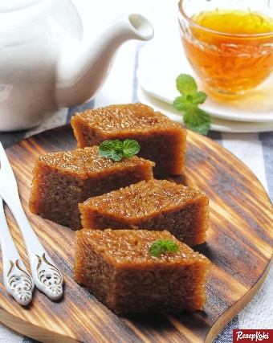
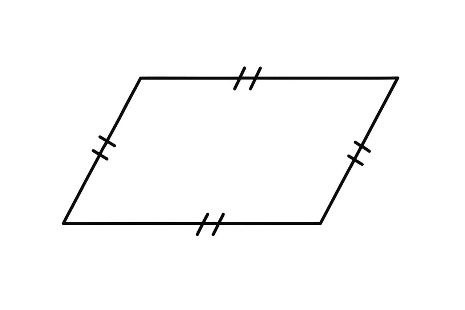
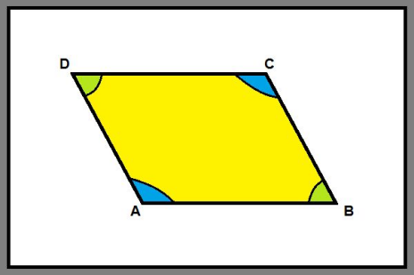
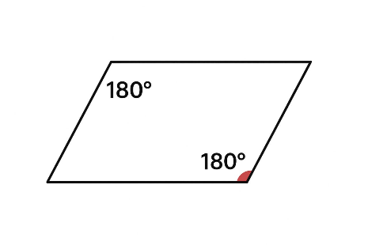
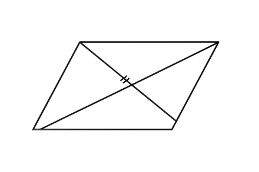

Geometri
Pegantar JajargenjangSegi banyak merupakan suatu kurva tertutup yang dibatasi paling sedikit tiga buah ruas garis. Di sekitar kita banyak benda yang yang bentuknya mirip jajar genjang, seperti papan tulis miring, atap rumah, atau kain segitiga yang ditarik miring.
Dalam pelajaran ini, kamu akan belajar menentukan keliling dan luas jajar genjang dengan cara yang mudah dan tepat. Kamu juga akan berlatih menyelesaikan soal cerita yang berkaitan dengan keliling dan luas, serta menunjukkan hasil perhitunganmu dengan percaya diri. Dengan belajar ini, kamu akan lebih paham bentuk-bentuk di sekitar dan menjadi lebih teliti dalam menghitung.
Contoh gambar di kehidupan sehari-hari:
A. Jajar Genjang
Jajargenjang merupakan bangun datar segiempat dengan sisi – sisinya yang berhadapan sejajar dan sama panjang.
Sifat – Sifat Jajargenjang
- Sisi – sisi yang berhadapan sama panjang dan sejajar.

- Sudut – sudut yang berhadapan sama besar.

- Jumlah pasangan sudut yang saling berdekatan adalah 180°.

- Kedua diagonalnya saling membagi dua sama panjang.

B. Keliling
Jajar genjang merupakan bangun segiempat yang sisi - sisinya sejajar sama panjang dan sudut - sudut yang berhadapan sama besar.
Panjang AB = CD dan BC = DA.
Rumus Keliling jajar genjang:
Latihan Menghitung Keliling Jajar Genjang
C. Luas
Luas jajar genjang dapat ditentukan dengan mengubahnya menjadi persegi panjang terlebih dahulu. Perhatikan gambar di bawah ini!
Jajar genjang diubah menjadi persegi Panjang terlebih dahulu.
Contoh:

Kuis Menghitung Luas Jajar Genjang
Pilih jawaban yang paling tepat untuk setiap soal di bawah ini.